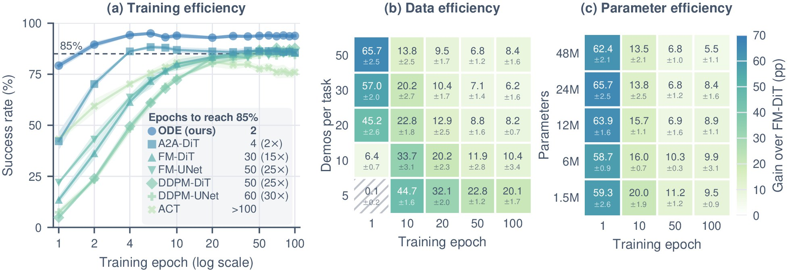
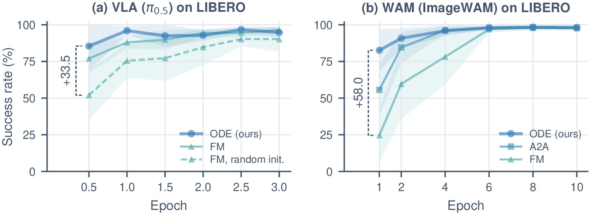
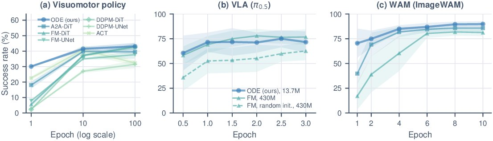
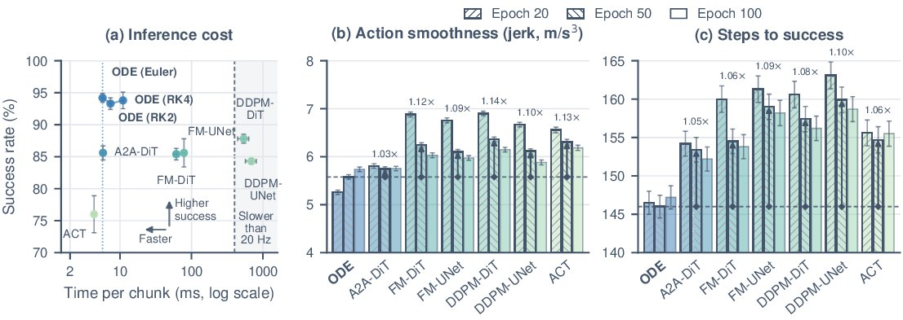
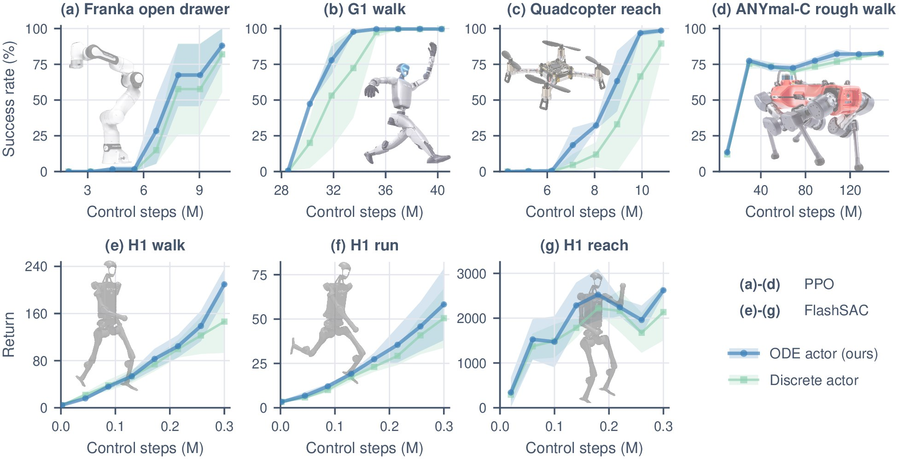
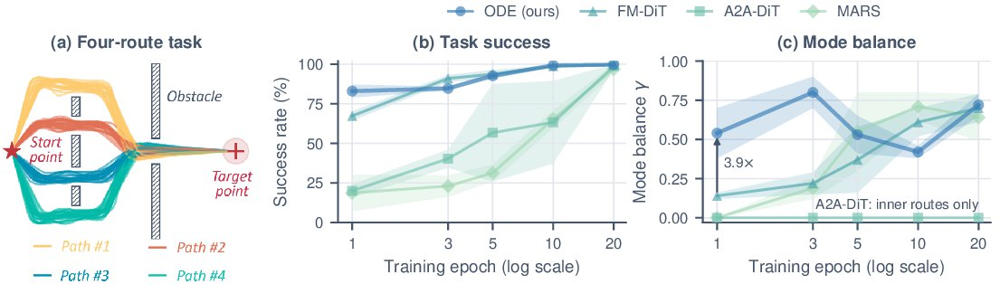
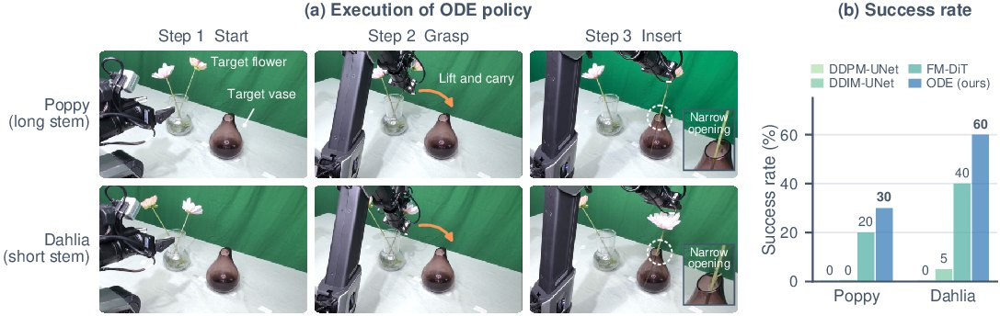
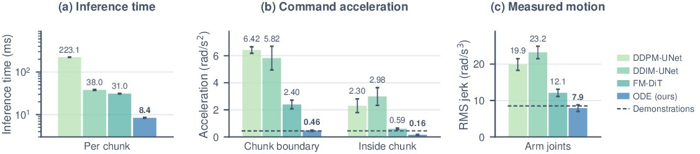
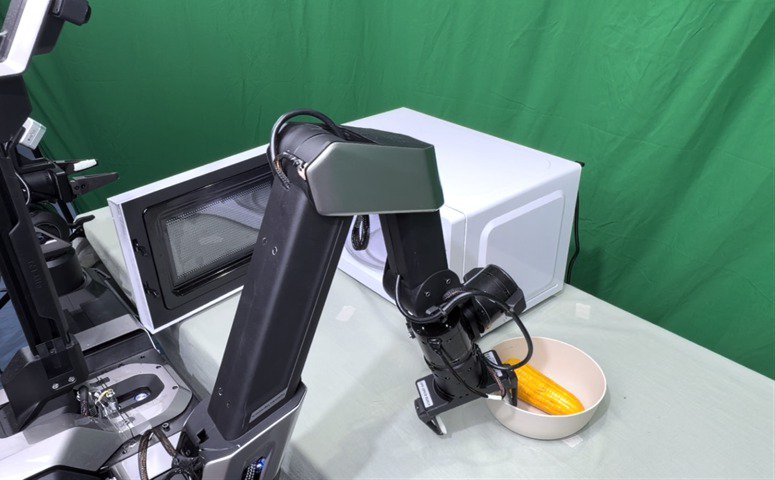
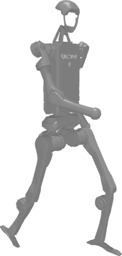

Contractive perturbation
Training starts some chunks off the demonstration and asks the path to come back. The field learns to pull drift back.
Robot learning · IL & RL
A robot policy that integrates its actions over physical time, so motion is continuous by construction.
Natura non facit saltus. Nature does not make jumps. — Leibniz
Each action is integrated from the previous one. Chunks join without jumps.
Autonomous rollout on a Galaxea R1 Lite. Two flowers, one after the other, from a glass into a narrow vase.
Method
Discrete policies output action values at fixed steps and leave continuity to the data. ODE policy learns how the action changes and integrates it over the robot's own time.
A discrete policy emits the whole chunk at once and starts the next one from scratch, so actions jump at the boundary. ODE policy reads the observation once per chunk, then integrates action by action and continues from where it stopped.
The mode is decided by the direction in which integration sets off, so it is enough to randomize that direction.
Training starts some chunks off the demonstration and asks the path to come back. The field learns to pull drift back.
The field lives in continuous time. One trained model runs at a finer step simply by integrating with a smaller step.
Results
Visuomotor policies on LIBERO, the action head of a VLA (π0.5) and a world action model (ImageWAM), and the actor of PPO and FlashSAC.
Learning efficiency · LIBERO
79.2% after one epoch, against at most 43.2% for six baselines
It matches a flow matching policy with less than half of the demonstrations, at every model size.

At scale · VLA and WAM
85.5% after half an epoch in π0.5
A randomly initialized ODE head with 3% of the parameters of the action expert. In ImageWAM, 82.6% against 24.6% after one epoch.

Generalization · LIBERO-plus
89.9% zero-shot under unseen perturbations in ImageWAM
Robustness arrives early in training, and within π0.5 it matches a pretrained expert many times its size.

Inference and smoothness
5.7 ms per chunk of 8 actions, each action sent as soon as it is integrated
10.8× faster than flow matching and about 100× faster than DDPM, with the lowest jerk at every checkpoint.

Reinforcement learning
97.7% vs. 72.3% on the G1 humanoid
A drop-in actor for PPO and FlashSAC, faster early learning on most tasks.

Multi-modality
All four routes from the first epoch
Randomizing the direction of the field is enough to pick a mode, without multi-step sampling.

Real robot · Galaxea R1 Lite
Joint-space actions at 15 Hz, the same method without changes.
Insert a thin stem into the narrow opening of a vase, with a long-stemmed poppy and a short-stemmed dahlia.

Grasp a bowl, place it in the microwave, push it in, and close the door with the other arm.

Platforms

Galaxea R1 Lite
Franka arm
G1 humanoid

H1 humanoid
ANYmal-C
Quadcopter
Cite
@article{jia2026ode,
title = {Ordinary Differential Equation Policy},
author = {Jia, Jindou and others and Yang, Jianfei},
year = {2026},
note = {Under review}
}